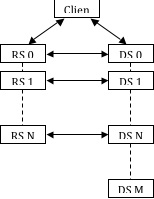
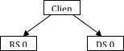
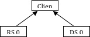
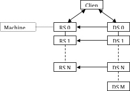
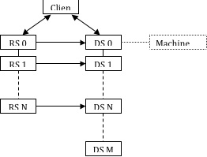

Client
/ Server Mode
Client / Server Mode
refers to a parallel ParaView session in which data server and
render server components reside within the same set of processes,
and the client is completely separate. The pvserver executable
combines the two server components into one process.
You can run pvserver
as a serial process on a single machine. If ParaView was compiled
with parallel support, you can also run it as an MPI parallel
program on a group of machines. Instructions for starting a program
with MPI are implementation- and system-dependent, so contact your
system administrator for information about starting an application
with MPI. With the MPICH implementation of MPI, the command to
start the server in parallel usually follows the format shown here.
mpirun –np
number_of_processes
path_to/pvserver arguments for
pvserver
By default, pvserver
will start and then wait for the client to connect to it. See the
next section for a full description. Briefly, to make the
connection, select Connection
from the File menu,
select (or make and then select) a configuration for the server,
and click Connect.
Note that you must start the server before the client attempts to
connect to it.
If the computer
running the server is behind a firewall, it is useful to have the
server initiate the connection instead of the client. The
-reverse-connection
(or -rc)
command-line option tells the server to do this. The server must
know the name of the machine to which it should connect; this is
specified with the --client-host
(or -ch) argument.
Note that when the connection is reversed, you must start the
client and instruct it to wait for a connection before the server
attempts to connect to it.
The client-to-server
connection is made over TCP, using a default port of 11111. If your
firewall puts restrictions on TCP ports, you may want to choose a
different port number. In the client dialog, simply choose a port
number in the Port
entry of the Configure New
Server dialog. Meanwhile, give pvserver the same port
number by including --server-port
(or –sp) in its
command-line argument list.
An example command
line to start the server and have it initiate the connection to a
particular client on a particular port number is given below.
pvserver –rc
–ch=magrathea –sp=26623
Render/Server
Mode
The render server
allows you to designate a separate group of machines (i.e., apart
from the data server and the client) to perform rendering. This
parallel mode lets you use dedicated rendering machines for
parallel rendering rather than relying on the data server machines,
which may have limited or no rendering capabilities. In ParaView,
the number of machines (N) composing the render server must be no
more than the number (M) composing the data server.
Note that although it
is true that at some large installations with particularly high
performing parallel rendering resources it can be very efficient to
run ParaView in Render/Server Mode, we have found in practice that
it is almost always the case that the data transfer time between
the two servers overwhelms the speedup gained by rendering on the
dedicated graphics cluster. For this reason we typically recommend
that you combine the data and render servers together as one
component and either render in software via Mesa on the data
processing cluster or do all of the visualization processing
directly on the GPU cluster.
If you still want to
break up the data processing and rendering tasks, there are two
sets of connections that must be made for ParaView to run in
render-server mode. The first connection set is between the client
and the first node of each of the data and render servers. The
second connection set is between the nodes of the render server and
the first N nodes of the data server. Once all of these connections
are established, they are bi-directional. The diagram in Figure 5
depicts the connections established when ParaView is running in
render server mode. Each double-ended arrow indicates a
bi-directional TCP connection between pairs of machines. The dashed
lines represent MPI connections between all machines within a
server. In all the diagrams in this section, the render server
nodes are denoted by RS 0, RS 1, …, RS N. The data server nodes
are similarly denoted by DS 0, DS 1, …, DS N, …, DS M.

Figure
5. Connections required in render server mode
The establishment of
connections between client and servers can either be forward (from
client to servers) or reverse (from servers back to client).
Likewise, the connections between render server and data server
nodes can be established either from the data server to the render
server or from the render server to the data server.
The main reason for
reversing the direction of any of the initial connections is that
machines behind firewalls are able to initiate connections to
machines outside the firewall, but not vice versa. If the data
server is behind a firewall, the data server should initiate the
connection with the client, and the data server nodes should
connect to the render server nodes. If the render server is behind
the firewall instead, both servers should initiate connections to
the client, but now the render server nodes should initiate the
connections with the nodes of the data server.
In the remaining
diagrams in this section, each arrow indicates the direction in
which the connection is initially established. Double-ended arrows
indicate bi-directional connections that have already been
established. In the example command lines, optional arguments are
enclosed in []’s. The rest of this section will be devoted to
discussing the two connections required for running ParaView in
render server mode.
Connection 1:
Connecting the client and servers
The first connection
that must be established is between the client and the first node
of both the data and render servers. By default, the client
initiates the connection to each server, as shown in Figure 6. In
this case, both the data server and the render server must be
running before the client attempts to connect to them.

Figure
6. Starting ParaView in render-server mode using standard
connections
To establish the
connections shown above, do the following. First, from the command
line of the machine that will run the data server, enter
“pvdataserver” to start it. Next, from the command line of the
machine that will run the render server, enter “pvrenderserver”
to start the render server. Now, from the machine that will run
the client, start the client application, and connect to the
running servers, as described in section 1.2 and summarized below.
Start ParaView and
select Connect from
the File menu to
open the Choose Server
dialog. Select Add Server
to open the Configure New
Server dialog. Create a new server connection with a
Server Type of
Client / Data Server / Render
Server. Enter the machine names or IP addresses of the
server machines in the Host
entries. Select Configure,
and then in the Configure
Server dialog, choose Manual.
Save the server configuration, and Connect
to it. At this point ParaView will establish the two connections.
This is similar to running ParaView in client/server mode but with
the addition of a render server.
The connection
between the client and the servers can also be initiated by the
servers. As explained above, this is useful when the servers are
running on machines behind a firewall. In this case, the client
must be waiting for both servers when they start. The diagram
indicating the initial connections is shown in Figure 7.

Figure
7. Reversing the connections between the servers and the client.
To establish the
connections shown above, start by opening the Configure
New Server dialog on the client. Choose Client
/ Data Server / Render Server (reverse connection) for
the Server Type in
the Configure New Server
dialog. Next, add both --reverse-connection (or -rc) and
--client-host (or -ch) to the command lines for the data server
and render server. The value of the --client-host parameter is the
name or IP address of the machine running the client. You can use
the default port numbers for these connections, or you can specify
ports in the client dialog by adding the --data-server-port (or
–dsp) and --render-server-port (or –rsp) command-line
arguments to the data server and render server command lines,
respectively. The port numbers for each server must agree with the
corresponding Port
entries in the dialog, and they must be different from each other.
For the remainder of
this chapter, -rc will be used instead of --reverse-connection
when the connection between the client and the servers is to be
reversed.
Connection 2:
Connecting the render and data servers
After the
connections are made between the client and the two servers, the
servers will establish connections with each other. In parallel
runs, this server-to-server connection is a set of connections
between all N nodes of the render server and the first N nodes of
the data server. By default the data server initiates the
connection to the render server, but this can be changed with a
configuration file. The format of this file is described below.
The server that
initiates the connection must know the name of the machine running
the other server and the port number it is using. In parallel
runs, each node of the connecting server must know the name of the
machine for the corresponding process in the other server to which
it should connect. The port numbers are randomly assigned, but
they can be assigned in the configuration file as described below.
The default set of
connections is illustrated in Figure 8. To establish these
connections, you must give the data server the connection
information discussed above, which you specify within a
configuration file. Use the --machines (or –m) command line
argument to tell the data server the name of the configuration
file. In practice, the same file should be given to all three
ParaView components. This ensures that the client, the render
server, and the data server all agree on the network parameters.

Figure
8. Initializing the connection from the data server to the render
server.
An example network
configuration file, called machines.pvx in this case, is given
below.
<?xml
version="1.0" ?>
<pvx>
<Process
Type="client">>
</Process>
<Process Type="render-server">
<Option
Name="render-node-port" Value="1357"/>
<Machine Name="rs_m1"
Environment="DISPLAY=rs_m1:0"/>
<Machine
Name="rs_m2"
Environment="DISPLAY=rs_m2:0"/>
</Process>
<Process Host="data-server">
<Machine Name="ds_m1" />
<Machine
Name="ds_m2" />
<Machine Name="ds_m3"
/>
<Machine Name="ds_m4" />
</Process>
</pvx>
Sample command-line
arguments that use the configuration file above to initiate the
network illustrated in Figure 8 are given below.
mpirun –np 2
pvdataserver –m=machines.pvx
mpirun –np 2
pvrenderserver -m=machines.pvx
paraview
–m=machines.pvx
It should be noted
that the machine configuration file discussed here is a distinct
entity from, and has a different syntax from, the server
configuration file discussed at the end of the next section. That
file is read only by the client; the file discussed here will be
given to the client and both servers.
In the machines file
above, the render-node-port entry in the render server’s XML
element tells the render server the port number on which it should
listen for a connection from the data server, and it tells the
data server what port number it should attempt to contact. This
entry is optional, and if it does not appear in the file the port
number will be chosen automatically. Note that it is not possible
to assign port numbers to individual machines within the server;
all will be given the same port number or use the automatically
chosen one. Note also that each render server machine is given a
display environment variable in this file. This is not required to
establish the connections, but it is helpful if you need to assign
particular X11 display names to the various render server nodes.
The initial
connection between the nodes of the two servers is made from the
data server to the render server. You can reverse this such that
the render server nodes connect to the corresponding nodes of the
data server instead as shown in Figure 9.

Figure
9. Reversing the connection between the servers and client and
connecting the render server to the data server.
Typically when the
server connection is reversed, the direction of the connection
between the client and the servers is also reversed (e.g., if the
render server is behind a firewall). In this case, the render
server must have the machine names and a connection port number to
connect to the data server. The same XML file is used for this
arrangement as with the standard connection. The only difference
in this case is that the render-node-port entry, if it is used,
must appear in the data server’s XML element instead of the
render server’s element. Example command-line arguments to
initiate this type of network are given here.
paraview
–m=machines.pvx
mpirun –np M
pvdataserver –m=machines.pvx -rc -ch=client
mpirun –np N
pvrenderserver –m=machines.pvx -rc -ch=client